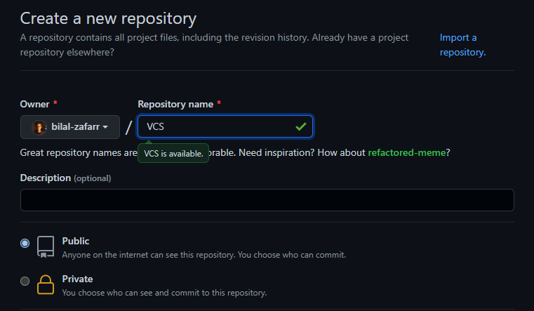
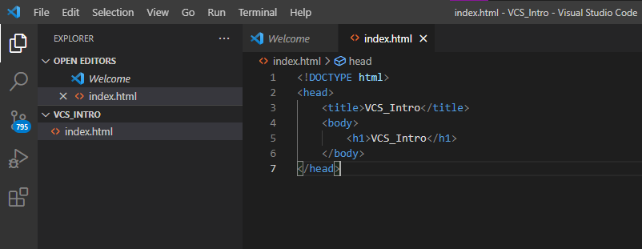

VCS Intro
Download and install git on your PC according to your OS
Create a github account if you dont already have one and create a new repository

Now create a HTML file on your PC and write some code in it

Now open a terminal here and connect your local repository with your remote repository and commit changes as shown
Go to page section in your github repository settings and select the main branch and host it on github pages
Now you can make changes and update those changes to your remote repository using the following commands